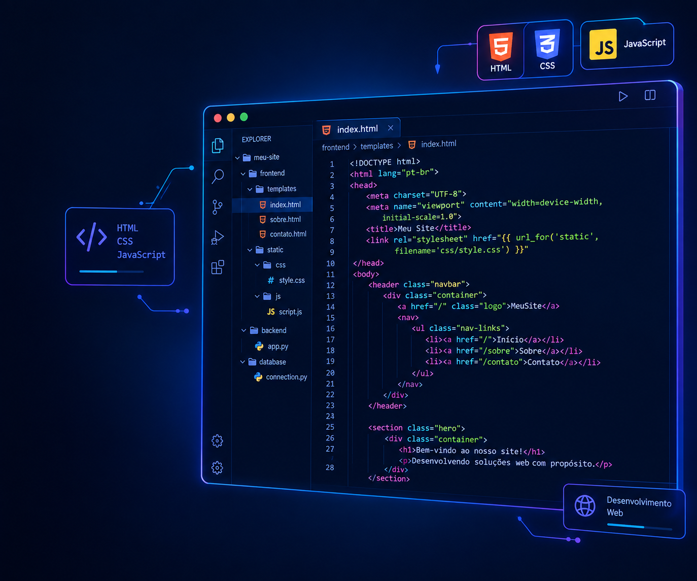
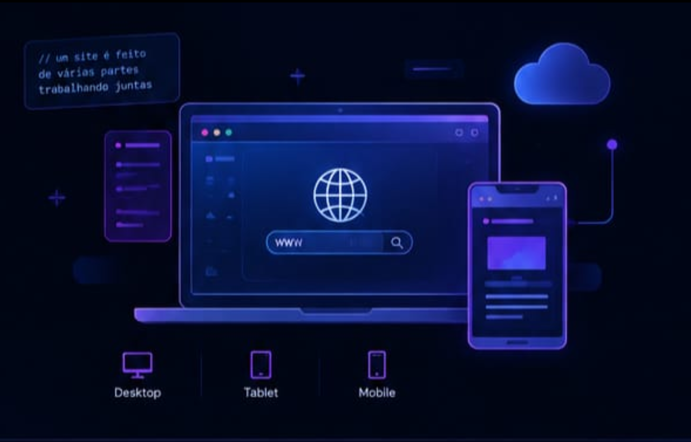
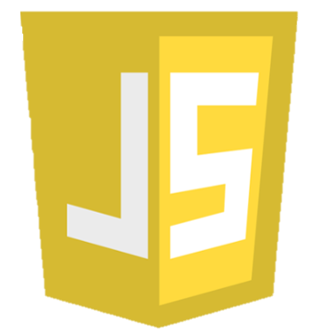

Programar a Web
é criar o que você vê
Descubra o que existe por trás dos sites que você acessa todos os dias e conheça as tecnologias que tornam a web possível.

O que é
programação web
Programação Web é o desenvolvimento de sites e aplicações que funcionam na internet. Ela combina diferentes tecnologias para criar páginas interativas visuais e funcionais, que podem ser acessadas de qualquer lugar, em qualquer dispositivo.

As principais tecnologias
Cada tecnologia tem um papel importante na construção de um site. Juntas, elas formam a base da programação web.
É o esqueleto da página. Define o conteúdo e a organização do site.
<div>
<p>Hello, world!</p>
</div>Deixa o site bonito e organizado. Cuida das cores, fontes, layout e design.
.botao {
background: #6c63ff;
color: #fff;
}
Adiciona dinamismo e faz o site funcionar de verdade. É o que permite ações, animações e respostas do usuário.
document.querySelector('.botao')
.addEventListener('click', () => {
alert('Hello, world!');
});Linguagem de consulta usada para armazenar, organizar e manipular dados em bancos de dados relacionais.
SELECT nome, email
FROM usuarios
WHERE ativo = 1
ORDER BY nome;Linguagem de programação amplamente usada no desenvolvimento web, especialmente para aplicações dinâmicas e sistemas.
<?php
$nome = 'Larissa';
echo "olá, $nome!";
?>Ambiente de execução JavaScript que permite criar aplicações do lado do servidor, usando o mesmo JavaScript do front-end.
const express = require('express');
const app = express();
app.get('/', (req, res) => {
res.send('servidor rodando!');
});
app.listen(3000, () => console.log('Porta 3000'));